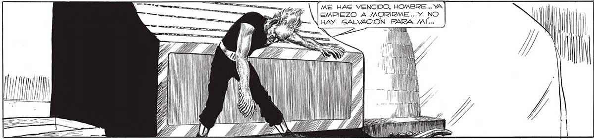
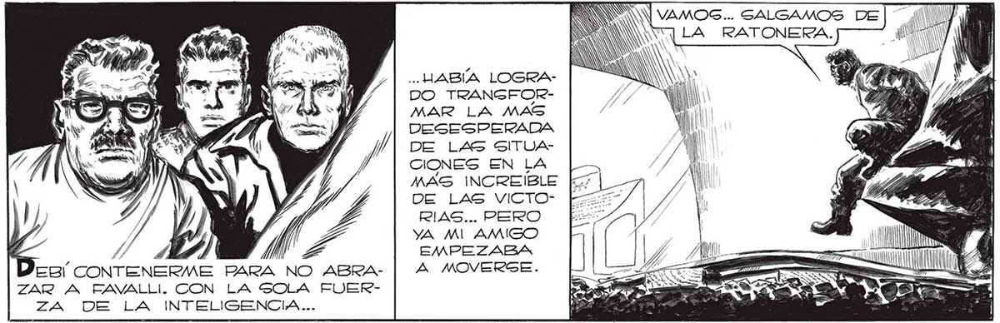
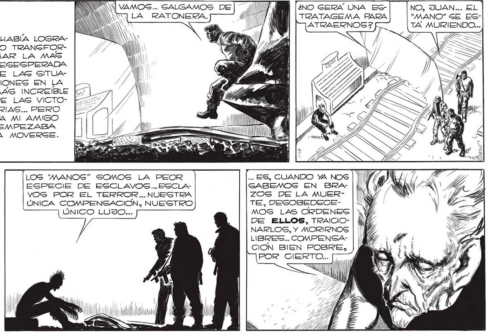

242 "ME HAG VENCIDO, HOMBRE... YA | EMPIEZO A MORIRME ... Y NO HAY GALVACION BARA MÍ... y NN VAMOS... SALGAMOS DE] MN (¿nO GERA UNA ES- NO, JUAN... EL LA RATONERA. AÑ | | TRATAGEMA PARA "MANO" GE ES: 7 TA MURIENDO... Ñ f y ... HABÍA LOGRADO TRANGFORMAR LA MAS DESESPERADA DE LAS SITUACIONES EN LA MAS INCREIBLE [57 |_ DE LAS VICTO- bis RIAS... PERO YA MIAMIGO [| ds > MA / EMPEZABA Y in L os CONTENERME PARA NO ABRA- | 4 MOVERSE. ARRE — o. AM ZAR A EAVALLI. CON LA SOLA FUER- E SEN ÉL ZA DE LA INTELIGENCIA... OS a A EA Ñ s y 3 ER A bS ¿AN y [Gl HOMBRES... ME ES- LOS MANOS” SOMOS LA PEOR ... ES, CUANDO YA NOS | | || Sy J TOY MURIENDO, SIN ESPECIE DE ESCLAVOS... ESCLA- GABEMOS EN BRA- ||, S Ñ rl ( ¡[REMEDIO POSIBLE. VOS POR EL TERROR... NUESTRA ZOG DE LA MUER| NA y) EN VERDAD, ÚNICA COMPENSACIÓN, NUESTRO TE, DESOSEDECESy A NY USTEDES, LOS ÚNICO LUJO... MOS LAS ORDENES | 1 9% HOMBRES, PUE DE ELLOS, TRAICIO- | lhf a DEN MAS QUE NARLOS, Y MORIRNOS | 'P He NOSOTROS... | LIBRES... COMPENGACION BIEN POBRE, POR GIERTOD. a TT "ÚAAIN AA MN Fin 2


